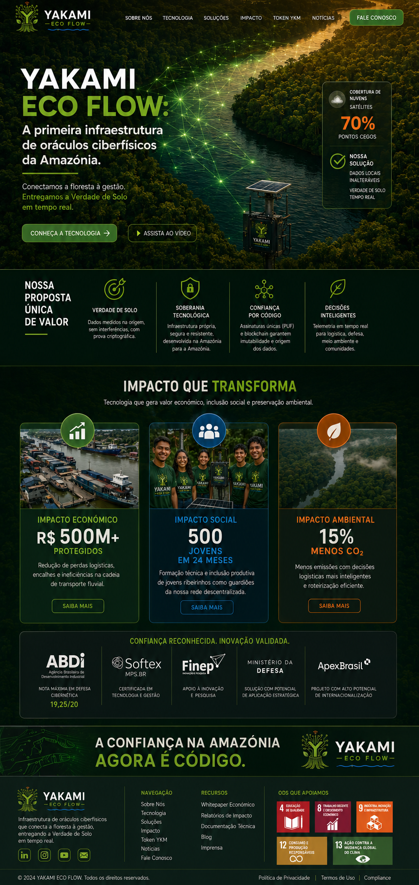
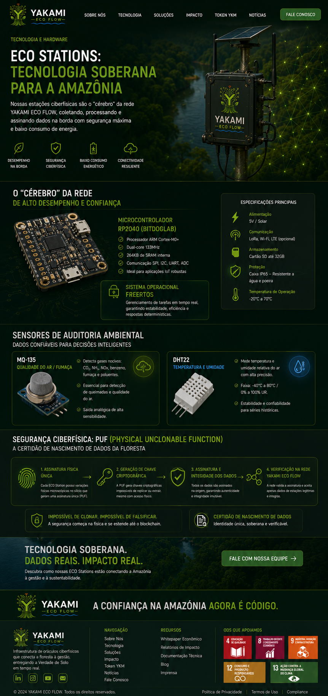
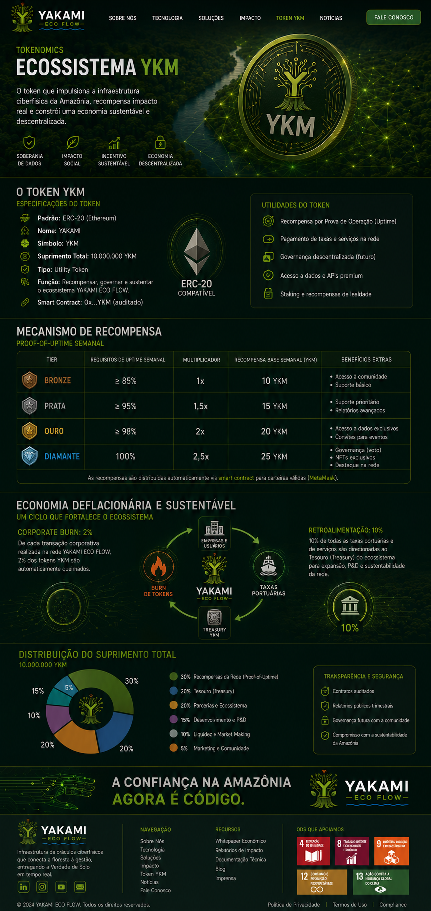
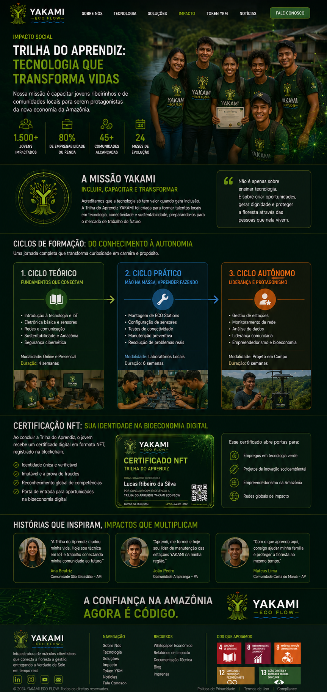
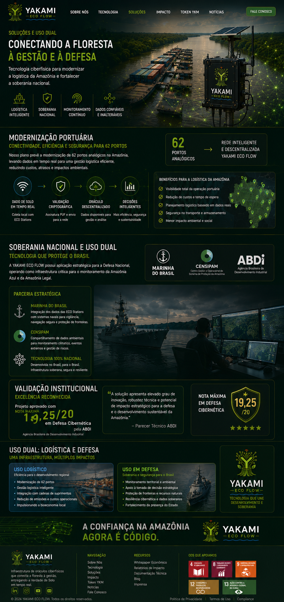
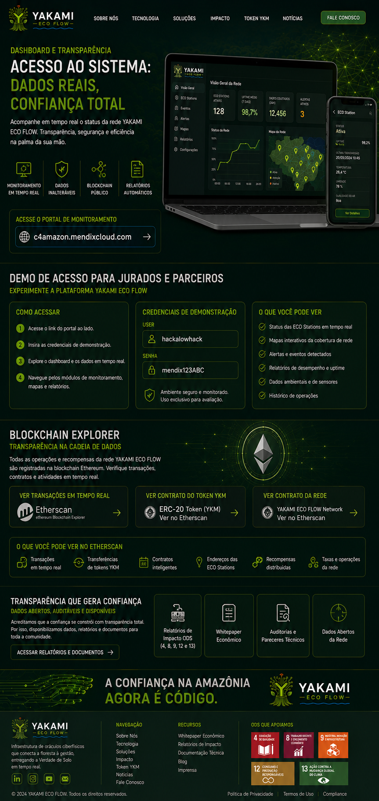

YAKAMI TRUSTFLOW
A Verdade de Solo da Amazônia. Infraestrutura ciberfísica e Smart Contracts.
EXPLORAR ARQUITETURAA Verdade de Solo da Amazônia. Infraestrutura ciberfísica e Smart Contracts.
EXPLORAR ARQUITETURA




